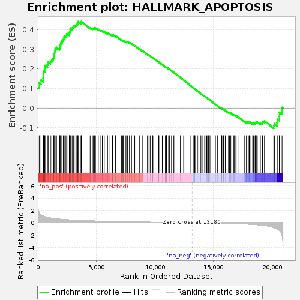
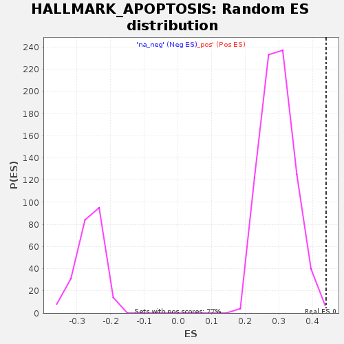

| | | Dataset | GSE18198_cov_collapsed |
| Phenotype | NoPhenotypeAvailable |
| Upregulated in class | na_pos |
| GeneSet | HALLMARK_APOPTOSIS |
| Enrichment Score (ES) | 0.44006738 |
| Normalized Enrichment Score (NES) | 1.4803321 |
| Nominal p-value | 0.00390625 |
| FDR q-value | 0.052322432 |
| FWER p-Value | 0.236 |
Table: GSEA Results Summary

Fig 1: Enrichment plot: HALLMARK_APOPTOSIS
Profile of the Running ES Score & Positions of GeneSet Members on the Rank Ordered List
| SYMBOL | TITLE | RANK IN GENE LIST | RANK METRIC SCORE | RUNNING ES | CORE ENRICHMENT | | 1 | JUN | NA | 0 | 5.975 | 0.1047 | Yes |
| 2 | LGALS3 | NA | 120 | 1.631 | 0.1276 | Yes |
| 3 | DAP3 | NA | 275 | 1.271 | 0.1424 | Yes |
| 4 | IFNB1 | NA | 456 | 1.092 | 0.1529 | Yes |
| 5 | TOP2A | NA | 484 | 1.058 | 0.1701 | Yes |
| 6 | BIRC3 | NA | 485 | 1.058 | 0.1887 | Yes |
| 7 | BTG2 | NA | 593 | 0.990 | 0.2009 | Yes |
| 8 | PAK1 | NA | 615 | 0.970 | 0.2169 | Yes |
| 9 | FAS | NA | 821 | 0.865 | 0.2222 | Yes |
| 10 | BCL2L1 | NA | 884 | 0.842 | 0.2339 | Yes |
| 11 | NEDD9 | NA | 1081 | 0.775 | 0.2381 | Yes |
| 12 | ADD1 | NA | 1193 | 0.736 | 0.2456 | Yes |
| 13 | BCL10 | NA | 1309 | 0.702 | 0.2524 | Yes |
| 14 | GADD45B | NA | 1366 | 0.686 | 0.2617 | Yes |
| 15 | ERBB3 | NA | 1378 | 0.682 | 0.2732 | Yes |
| 16 | EBP | NA | 1444 | 0.664 | 0.2817 | Yes |
| 17 | SATB1 | NA | 1449 | 0.663 | 0.2931 | Yes |
| 18 | BMF | NA | 1483 | 0.656 | 0.3030 | Yes |
| 19 | IL1A | NA | 1597 | 0.633 | 0.3087 | Yes |
| 20 | RNASEL | NA | 1865 | 0.576 | 0.3059 | Yes |
| 21 | EREG | NA | 1887 | 0.574 | 0.3150 | Yes |
| 22 | BMP2 | NA | 1940 | 0.567 | 0.3224 | Yes |
| 23 | EMP1 | NA | 1961 | 0.562 | 0.3313 | Yes |
| 24 | CYLD | NA | 2058 | 0.549 | 0.3363 | Yes |
| 25 | DCN | NA | 2068 | 0.546 | 0.3454 | Yes |
| 26 | HMGB2 | NA | 2176 | 0.534 | 0.3496 | Yes |
| 27 | CTNNB1 | NA | 2237 | 0.527 | 0.3560 | Yes |
| 28 | TIMP2 | NA | 2252 | 0.525 | 0.3645 | Yes |
| 29 | TXNIP | NA | 2364 | 0.509 | 0.3681 | Yes |
| 30 | FASLG | NA | 2460 | 0.496 | 0.3722 | Yes |
| 31 | CD69 | NA | 2493 | 0.492 | 0.3793 | Yes |
| 32 | PLPPR4 | NA | 2692 | 0.467 | 0.3780 | Yes |
| 33 | CD44 | NA | 2698 | 0.466 | 0.3859 | Yes |
| 34 | LMNA | NA | 2749 | 0.461 | 0.3916 | Yes |
| 35 | PSEN2 | NA | 2764 | 0.460 | 0.3990 | Yes |
| 36 | CFLAR | NA | 2776 | 0.458 | 0.4065 | Yes |
| 37 | CDKN1B | NA | 2933 | 0.442 | 0.4067 | Yes |
| 38 | RARA | NA | 3002 | 0.438 | 0.4111 | Yes |
| 39 | IFITM3 | NA | 3038 | 0.434 | 0.4170 | Yes |
| 40 | BTG3 | NA | 3109 | 0.424 | 0.4211 | Yes |
| 41 | ANKH | NA | 3251 | 0.410 | 0.4215 | Yes |
| 42 | PSEN1 | NA | 3331 | 0.402 | 0.4247 | Yes |
| 43 | IFNGR1 | NA | 3395 | 0.396 | 0.4286 | Yes |
| 44 | TIMP3 | NA | 3417 | 0.394 | 0.4345 | Yes |
| 45 | RHOB | NA | 3445 | 0.390 | 0.4401 | Yes |
| 46 | CLU | NA | 3689 | 0.369 | 0.4348 | No |
| 47 | CASP8 | NA | 3717 | 0.367 | 0.4400 | No |
| 48 | IER3 | NA | 4474 | 0.307 | 0.4090 | No |
| 49 | SC5D | NA | 4662 | 0.293 | 0.4051 | No |
| 50 | APP | NA | 4751 | 0.288 | 0.4059 | No |
| 51 | PTK2 | NA | 4840 | 0.282 | 0.4066 | No |
| 52 | CCND1 | NA | 4927 | 0.275 | 0.4073 | No |
| 53 | CREBBP | NA | 5166 | 0.261 | 0.4004 | No |
| 54 | CAV1 | NA | 5389 | 0.249 | 0.3941 | No |
| 55 | IL1B | NA | 5513 | 0.242 | 0.3924 | No |
| 56 | CASP9 | NA | 5677 | 0.233 | 0.3887 | No |
| 57 | SQSTM1 | NA | 5944 | 0.219 | 0.3797 | No |
| 58 | MMP2 | NA | 5948 | 0.219 | 0.3834 | No |
| 59 | SMAD7 | NA | 6170 | 0.208 | 0.3764 | No |
| 60 | NEFH | NA | 6378 | 0.198 | 0.3700 | No |
| 61 | TAP1 | NA | 6390 | 0.197 | 0.3729 | No |
| 62 | TGFBR3 | NA | 6611 | 0.187 | 0.3656 | No |
| 63 | KRT18 | NA | 6630 | 0.187 | 0.3680 | No |
| 64 | BIK | NA | 7146 | 0.166 | 0.3461 | No |
| 65 | PDCD4 | NA | 7264 | 0.162 | 0.3433 | No |
| 66 | CCND2 | NA | 7298 | 0.160 | 0.3446 | No |
| 67 | F2R | NA | 7529 | 0.152 | 0.3362 | No |
| 68 | BCL2L2 | NA | 7603 | 0.149 | 0.3353 | No |
| 69 | PPP2R5B | NA | 7615 | 0.149 | 0.3374 | No |
| 70 | DPYD | NA | 7657 | 0.147 | 0.3380 | No |
| 71 | ATF3 | NA | 7833 | 0.141 | 0.3320 | No |
| 72 | IL6 | NA | 7852 | 0.140 | 0.3336 | No |
| 73 | HGF | NA | 8009 | 0.135 | 0.3284 | No |
| 74 | SLC20A1 | NA | 8283 | 0.124 | 0.3175 | No |
| 75 | IGF2R | NA | 8703 | 0.111 | 0.2993 | No |
| 76 | CASP3 | NA | 8919 | 0.104 | 0.2908 | No |
| 77 | BCL2L11 | NA | 8985 | 0.102 | 0.2894 | No |
| 78 | PLAT | NA | 9368 | 0.091 | 0.2726 | No |
| 79 | FEZ1 | NA | 9501 | 0.087 | 0.2678 | No |
| 80 | SPTAN1 | NA | 9603 | 0.084 | 0.2644 | No |
| 81 | AVPR1A | NA | 9810 | 0.078 | 0.2559 | No |
| 82 | ROCK1 | NA | 9837 | 0.078 | 0.2560 | No |
| 83 | AIFM3 | NA | 10327 | 0.064 | 0.2336 | No |
| 84 | ERBB2 | NA | 10349 | 0.063 | 0.2337 | No |
| 85 | PEA15 | NA | 10637 | 0.055 | 0.2209 | No |
| 86 | TGFB2 | NA | 10912 | 0.048 | 0.2085 | No |
| 87 | CDK2 | NA | 10916 | 0.048 | 0.2092 | No |
| 88 | GSN | NA | 10989 | 0.046 | 0.2066 | No |
| 89 | IGFBP6 | NA | 10996 | 0.046 | 0.2071 | No |
| 90 | TSPO | NA | 11033 | 0.045 | 0.2061 | No |
| 91 | MGMT | NA | 11180 | 0.042 | 0.1998 | No |
| 92 | BGN | NA | 11218 | 0.041 | 0.1988 | No |
| 93 | PDGFRB | NA | 11243 | 0.040 | 0.1983 | No |
| 94 | HMOX1 | NA | 11426 | 0.035 | 0.1902 | No |
| 95 | XIAP | NA | 11621 | 0.031 | 0.1814 | No |
| 96 | MCL1 | NA | 11706 | 0.029 | 0.1779 | No |
| 97 | SOD2 | NA | 12187 | 0.020 | 0.1551 | No |
| 98 | ANXA1 | NA | 12215 | 0.019 | 0.1542 | No |
| 99 | DNAJA1 | NA | 12462 | 0.015 | 0.1426 | No |
| 100 | GSTM1 | NA | 12584 | 0.012 | 0.1370 | No |
| 101 | DNAJC3 | NA | 13018 | 0.003 | 0.1162 | No |
| 102 | BAX | NA | 13281 | -0.002 | 0.1036 | No |
| 103 | IL18 | NA | 13405 | -0.004 | 0.0978 | No |
| 104 | GNA15 | NA | 13425 | -0.004 | 0.0970 | No |
| 105 | GPX3 | NA | 13495 | -0.006 | 0.0937 | No |
| 106 | GPX4 | NA | 13624 | -0.009 | 0.0877 | No |
| 107 | PMAIP1 | NA | 13635 | -0.009 | 0.0874 | No |
| 108 | F2 | NA | 13760 | -0.012 | 0.0817 | No |
| 109 | MADD | NA | 13879 | -0.014 | 0.0762 | No |
| 110 | CASP4 | NA | 13938 | -0.015 | 0.0737 | No |
| 111 | LUM | NA | 14042 | -0.018 | 0.0691 | No |
| 112 | CASP2 | NA | 14256 | -0.022 | 0.0592 | No |
| 113 | TNFRSF12A | NA | 14373 | -0.024 | 0.0541 | No |
| 114 | CTH | NA | 14432 | -0.026 | 0.0517 | No |
| 115 | PLCB2 | NA | 14506 | -0.028 | 0.0487 | No |
| 116 | BCAP31 | NA | 14561 | -0.028 | 0.0466 | No |
| 117 | SAT1 | NA | 14595 | -0.029 | 0.0455 | No |
| 118 | TNF | NA | 14712 | -0.032 | 0.0405 | No |
| 119 | PRF1 | NA | 15177 | -0.047 | 0.0190 | No |
| 120 | BRCA1 | NA | 15321 | -0.052 | 0.0130 | No |
| 121 | WEE1 | NA | 15369 | -0.054 | 0.0117 | No |
| 122 | EGR3 | NA | 15673 | -0.066 | -0.0017 | No |
| 123 | CDC25B | NA | 15714 | -0.068 | -0.0025 | No |
| 124 | GADD45A | NA | 15732 | -0.069 | -0.0021 | No |
| 125 | BID | NA | 15862 | -0.075 | -0.0070 | No |
| 126 | DAP | NA | 15891 | -0.077 | -0.0070 | No |
| 127 | GUCY2D | NA | 16019 | -0.082 | -0.0116 | No |
| 128 | DNM1L | NA | 16310 | -0.095 | -0.0239 | No |
| 129 | CD2 | NA | 16312 | -0.096 | -0.0223 | No |
| 130 | BCL2L10 | NA | 16328 | -0.096 | -0.0213 | No |
| 131 | SOD1 | NA | 16377 | -0.098 | -0.0219 | No |
| 132 | CD38 | NA | 16491 | -0.104 | -0.0255 | No |
| 133 | CD14 | NA | 16724 | -0.116 | -0.0346 | No |
| 134 | DDIT3 | NA | 16779 | -0.118 | -0.0352 | No |
| 135 | PPT1 | NA | 16924 | -0.127 | -0.0399 | No |
| 136 | DIABLO | NA | 16949 | -0.128 | -0.0388 | No |
| 137 | RHOT2 | NA | 17193 | -0.146 | -0.0479 | No |
| 138 | CASP1 | NA | 17680 | -0.184 | -0.0681 | No |
| 139 | RETSAT | NA | 17825 | -0.199 | -0.0715 | No |
| 140 | HSPB1 | NA | 17870 | -0.203 | -0.0701 | No |
| 141 | FDXR | NA | 17995 | -0.214 | -0.0723 | No |
| 142 | GCH1 | NA | 18073 | -0.223 | -0.0721 | No |
| 143 | CCNA1 | NA | 18136 | -0.230 | -0.0710 | No |
| 144 | DFFA | NA | 18363 | -0.255 | -0.0774 | No |
| 145 | LEF1 | NA | 18436 | -0.265 | -0.0762 | No |
| 146 | CDKN1A | NA | 18570 | -0.283 | -0.0777 | No |
| 147 | RELA | NA | 18578 | -0.284 | -0.0730 | No |
| 148 | GSR | NA | 18672 | -0.299 | -0.0723 | No |
| 149 | H1-0 | NA | 18755 | -0.310 | -0.0708 | No |
| 150 | TNFSF10 | NA | 19017 | -0.361 | -0.0770 | No |
| 151 | PPP3R1 | NA | 19153 | -0.388 | -0.0767 | No |
| 152 | CASP7 | NA | 19202 | -0.398 | -0.0720 | No |
| 153 | CASP6 | NA | 19245 | -0.407 | -0.0669 | No |
| 154 | TIMP1 | NA | 19370 | -0.440 | -0.0652 | No |
| 155 | ISG20 | NA | 20166 | -0.754 | -0.0902 | No |
| 156 | IRF1 | NA | 20220 | -0.790 | -0.0789 | No |
| 157 | GPX1 | NA | 20441 | -0.980 | -0.0723 | No |
| 158 | VDAC2 | NA | 20458 | -0.999 | -0.0556 | No |
| 159 | ETF1 | NA | 20642 | -1.230 | -0.0428 | No |
| 160 | ENO2 | NA | 20647 | -1.239 | -0.0213 | No |
| 161 | BNIP3L | NA | 20872 | -2.036 | 0.0036 | No |
Table: GSEA details [plain text format]

Fig 2: HALLMARK_APOPTOSIS: Random ES distribution
Gene set null distribution of ES for HALLMARK_APOPTOSIS